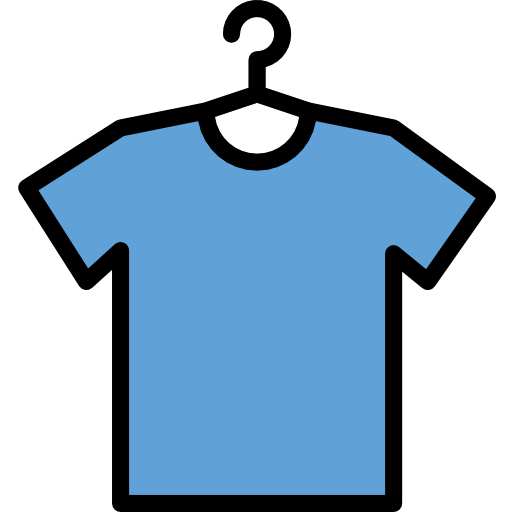

よみもの
よみものとは？
シルエット、着まわし術に関する
お得な情報が詰まっています。
おしゃれの基本「シルエット」
を知るだけで人生が変わる！？
「I・Y・A」シルエットって何？
ファッションにおけるシルエットとは、いわゆる服を着た時の外枠・輪郭のことです。
まずは基本的なシルエットを3つご紹介します。
-
Iラインシルエット

アルファベットのI（アイ）のように細いIラインシルエット。
3つのシルエットの中でも特にシンプルで、スーツスタイルとも同じなので、スマートな印象が特徴です。
身長を高く見せるファッションテクニックの一つです。 -
Yラインシルエット
上半身にボリュームがあり、下半身は細身にまとめるYラインシルエット。
大人っぽさが生まれる上に、周りを隠し、華奢な体やぽっちゃりなど、体型の悩みなどカバーしやすいシルエットです。
-
Aラインシルエット
上半身は細身、下半身はワイドパンツのような太さのあるアイテムで作るAラインシルエット。
どしっとした印象があり、男らしさのあるコーディネートを作りやすいです。
すぐに使える着回し術
少ない服で着回すポイント
- 基本アイテムは着まわしのきく定番ものを厳選
- 組み合わせのバリエーションをたくさん作っておく
- 小物や着こなしワザでアレンジする
I・Y・Aラインシルエットのアイテムを揃えておいて、組み合わせ（着回し）やアレンジで印象を与えます。
次のルールに従ってアイテムを厳選し、ワードロープを構成しましょう。
ファッションに苦手意識がある人には「着回し」は難しいテクニックのように思えるかもしれませんが、
最初から着回し安いアイテムを厳選しておけば、難しくない！
- シンプルなデザイン
- 無地
- 基本色（黒、ネイビー、白、カーキ）
- 定番アイテム
持っておくべき主力服
-
①Tシャツ
Tシャツは基本中の基本アイテム。
※基本色 ZOZOTOWNで見る
無地のものを選べばオールシーズン使えます。
夏は一枚で着て夏以外はインナーとして着られます。
色は基本色※を使いましょう。 -
②白シャツ
清潔感があって高い好感度をキープできるのが襟付きの長袖白シャツです。
ZOZOTOWNで見る
誰にでも似合うし組み合わせがしやすい、万能アイテム！ -
③ジャケット
きちんとした格好が要求される場面での、軽めのアウターとして便利なジャケット。
ZOZOTOWNで見る
スタイルが良く見えて女子受けもいい。 -
④デニム
カジュアルボトムス定番の綺麗めなインディゴブルーをおすすめします。
ZOZOTOWNで見る
合わせ方次第で上品に！ -
⑤白スニーカー
カジュアル派には外せないスニーカー。
ZOZOTOWNで見る
白スニーカーならNGな組み合わせもほぼないため毎日履くことができる。